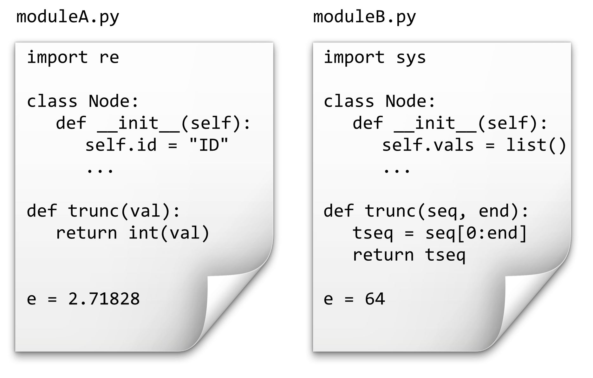
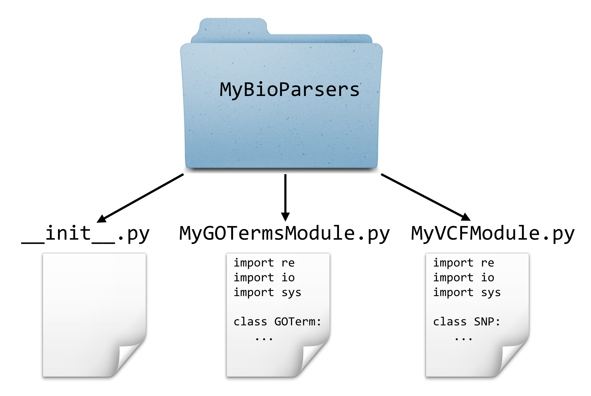
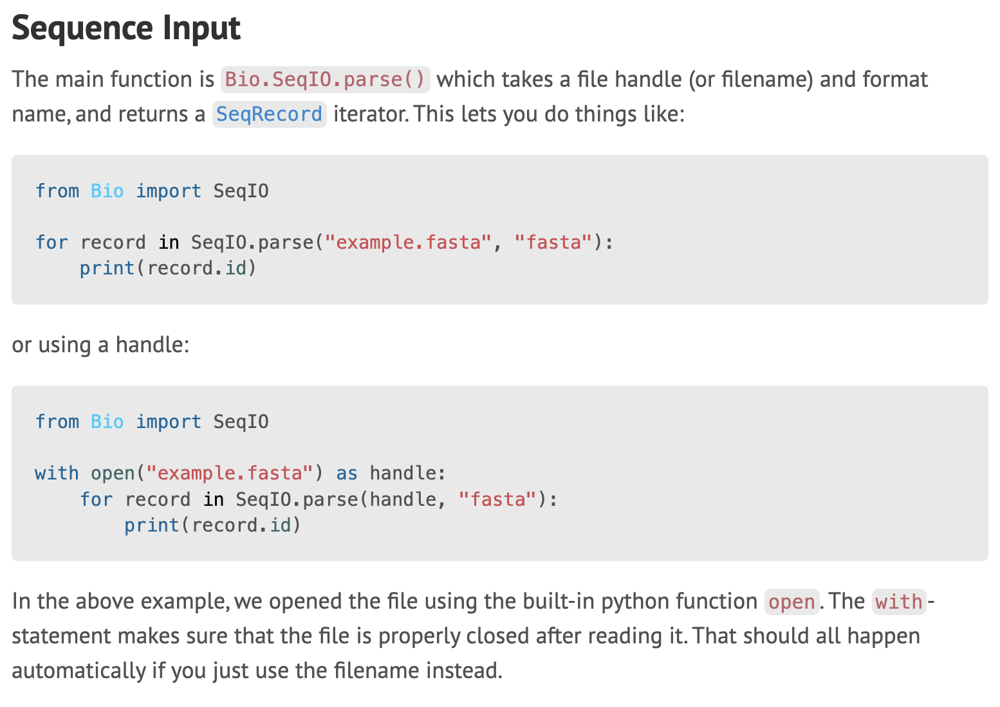

Chapter 27 Application Programming Interfaces, Modules, Packages, Syntactic Sugar
We know that objects like lists have methods such as .sort() and .append(). Do they have others? They do, and one way to find them is to run Python in the interactive mode on the command line.78
To do this, we execute the python interpreter without specifying a file to interpret. The result is a Python prompt, >>>, where we can type individual lines of Python code and see the results.
[oneils@mbp ~/apcb/py]$ python
Python 3.12.9 | packaged by Anaconda, Inc. | (main, Feb 6 2025, 13:04:33) [Clang 14.0.6 ] on darwin
Type "help", "copyright", "credits" or "license" for more information.
>>> a = 3 + 4
>>> print(a)
7
>>>
The interactive mode, aside from providing an interface for running quick tests of Python functionality, includes a help system! Simply run the help() function on either a class name (like help(list)) or an instance of the class.
>>> a = list()
>>> help(a)
This command opens an interactive viewer in which we can scroll to see all the methods that an object of that type provides. Here’s a sample from the help page:
|
| append(self, object, /)
| Append object to the end of the list.
|
| clear(self, /)
| Remove all items from list.
|
| copy(self, /)
| Return a shallow copy of the list.
|
| count(self, value, /)
| Return number of occurrences of value.
|
Exit the interactive help page by pressing the q key.
Browsing through this documentation reveals that Python lists have many methods, including .append(), .count(), and others. Sometimes the documentation isn’t as clear as one would hope. In these cases, some experimentation may be required. Between the description above and some code tests, for example, can you determine what a list’s .count() method does and how to use it effectively?
The set of methods and instance variables belonging to an object or class is known as its API, or Application Programming Interface. The API is the set of functions, methods, or variables provided by an encapsulated collection of code. APIs are an important part of programming because they represent the “user interface” for programming constructs that others have written.
Sometimes it can be useful to determine what class or “type” to which a variable refers, especially for looking up the API for objects of that type. The type() function comes in handy when combined with a print() call — it prints the type (the class) of data referenced by a variable. The result can then be investigated with help().
[oneils@mbp ~/apcb/py]$ python
Python 3.12.9 | packaged by Anaconda, Inc. | (main, Feb 6 2025, 13:04:33) [Clang 14.0.6 ] on darwin
Type "help", "copyright", "credits" or "license" for more information.
>>> seq = "ACTAGA"
>>> print(type(seq))
>>> help(str)
To exit the interactive Python session, simply call the builtin quit() fuction (or press Ctrl + D, the “end of transmission” character) to return to
Modules
Consider this chunk of code from the example in chapter 26, “Use Case: Counting SNPs”, which makes use of the Chromosome and SNP class definitions:
## Create chrnames_to_chrs dictionary, parse the input file
chrnames_to_chrs = dict()
with open(filename, "r") as fhandle:
for line in fhandle:
# don't attempt to parse header lines
if line[0] != "#":
line_stripped = line.strip()
line_list = re.split(r"\s+", line_stripped)
chrname = line_list[0]
pos = int(line_list[1])
snpid = line_list[2]
refallele = line_list[3]
altallele = line_list[4]
## Put the data in the dictionary
if chrname in chrnames_to_chrs:
chr_obj = chrnames_to_chrs[chrname]
chr_obj.add_snp(chrname, pos, snpid, refallele, altallele)
else:
chr_obj = Chromosome(chrname)
chr_obj.add_snp(chrname, pos, snpid, refallele, altallele)
chrnames_to_chrs[chrname] = chr_obj
This segment of code takes a file name and produces a dictionary with nicely organized contents of the file. Because this functionality is succinctly defined, it makes sense to turn this into a function that takes the file name as a parameter and returns the dictionary. The code is almost exactly the same, except for being wrapped up in a function definition.
def vcf_to_chrnames_dict(filename: str) -> dict[str,tuple]:
'''Create chrnames_to_chrs dictionary, parse the input file'''
chrnames_to_chrs = dict()
with open(filename, "r") as fhandle:
for line in fhandle:
# don't attempt to parse header lines
if line[0] != "#":
line_stripped = line.strip()
line_list = re.split(r"\s+", line_stripped)
chrname = line_list[0]
pos = int(line_list[1])
snpid = line_list[2]
refallele = line_list[3]
altallele = line_list[4]
## Put the data in the dictionary
if chrname in chrnames_to_chrs:
chr_obj = chrnames_to_chrs[chrname]
chr_obj.add_snp(chrname, pos, snpid, refallele, altallele)
else:
chr_obj = Chromosome(chrname)
chr_obj.add_snp(chrname, pos, snpid, refallele, altallele)
chrnames_to_chrs[chrname] = chr_obj
return chrnames_to_chrs
Later, we can call this function to do all the work of parsing a given file name:
filename = sys.argv[1]
chrnames_to_chrs = vcf_to_chrnames_dict(filename)
print(f"chrom\ttransitions\ttransversions")
for chrname in chrnames_to_chrs:
chr_obj = chrnames_to_chrs[chrname]
trs = chr_obj.count_transitions()
trv = chr_obj.count_transversions()
print(f"{chrname}\t{trs}\t{trv}")
Now, what if this function and the two class definitions were things that we wanted to use in other projects? We may wish to make a module out of them—a file containing Python code (usually related to a single topic, such as a set of functions or class definitions related to a particular kind of data or processing).
We’ve seen a number of modules already, including re and sys. To use a module, we just need to run import <modulename>. As it turns out, modules are simply files of Python code ending in .py! Thus, when we use import modulename, the interpreter searches for a modulename.py containing the various function and class definitions. Module files may either exist in a system-wide location, or be present in the working directory of the program importing them.79
Importing the module in this way creates a namespace for the module. This namespace categorizes all of the functions and classes contained within that module so that different modules may have functions, classes, and variables with the same name without conflicting.

If we have the above two files in the same directory as our program, source code like the following would print 4, 64, 2.71828, and "TAC".
import moduleA
import moduleB
print(moduleA.trunc(4.56)) # 4
print(moduleB.e) # 64
print(moduleA.e) # 2.71828
print(moduleB.trunc("TACTAA", 3)) # "TAC"
a_node = moduleA.Node() # Node object defined bn moduleA
b_node = moduleB.Node() # Node object defined by moduleB
Unfortunately, Python uses the . operator in multiple similar ways, such as indicating a method belonging to an object (as in a_list.append("ID3")) and to indicate a function, variable, or class definition belonging to a namespace (as above).
Thus, as a “container” for names, the namespace allows different modules to name functions, classes, and variables the same way without conflicting. Just as a class may be documented by its API, so may modules: a module’s API describes the functions, classes, and variables it defines. These may also be accessed through the interactive help menu (and online). Try running import re followed by help(re) to see all the functions provided by the re module.
[oneils@mbp ~/apcb/py]$ python
Python 3.12.9 | packaged by Anaconda, Inc. | (main, Feb 6 2025, 13:04:33) [Clang 14.0.6 ] on darwin
Type "help", "copyright", "credits" or "license" for more information.
>>> import re
>>> help(re)
There are a huge number of modules (and packages) available for download online, and Python also comes with a wide variety of useful modules by default. Aside from re and sys, discussed previously, some of the potentially more interesting modules include:
string: common string operations (changing case, formatting, etc.)math: common mathematical functions (square root, trig functions, etc.)time,datetimeandcalendar: operations on dates and timesrandom: generating and working with random numbersargparse: user-friendly parsing of complex arguments on the command lineTkinter: creating graphical user interfaces (with buttons, scroll bars, etc.)unittest: automating the creation and running of unit teststurtle: a simple interface for displaying line-based graphics80
Tutorials for these specific modules may be found online, as may lists of many other packages and modules that come installed with Python or that are available for download.
Creating a Module
Let’s create a module called MyVCFModule.py to hold the two class definitions and parsing function from the last example. While we’re doing so, we’ll also convert the comments that we had created for our classes, methods, and functions into “docstrings.” Docstrings are triple-quoted strings that provide similar functionality to comments, but can be parsed later to produce the module’s API. They may span multiple lines, but should occur immediately inside the corresponding module, class, or function definition. Here we leave out the contents of the methods and functions (which are the same as in the previous chapter) to save space:
#!/usr/bin/env Python
''' Personal module for parsing VCF files. '''
import re
class SNP:
''' A class representing simple SNPs''' # Docstring
def __init__(self, chrname, pos, snpid, refallele, altallele):
''' Constructor method '''
# ...
def is_transition(self):
''' Returns True if refallele/altallele is A/G, G/A, C/T, or T/C '''
# ...
def is_transversion(self):
'''Returns True if the snp is a transversion (i.e., not a transition)
# ...
class Chromosome:
''' A class representing a chromosome, which has a collection of SNPs '''
def __init__(self, chrname):
# ...
def get_name(self):
# ...
def add_snp(self, chrname, pos, snpid, refallele, altallele):
# ...
def count_transitions(self):
# ...
def count_transversions(self):
# ...
def vcf_to_chrnames_dict(filename: str) -> dict[str,tuple]:
# ...
The program that makes use of this module, which exists in a separate file in the same directory (perhaps called snps_ex2.py), is short and sweet.81
#!/usr/bin/env python
import MyVCFModule
import sys
## Check usage syntax, read filename
if len(sys.argv) != 2:
print("This program parses a VCF 4.0 file and counts")
print("transitions and transversions on a per-chromosome basis.")
print("")
print("Usage: ./snps_ex2.py ")
quit()
filename = sys.argv[1]
chrnames_to_chrs = MyVCFModule.vcf_to_chrnames_dict(filename)
## Print the results!
print(f"chrom\ttransitions\ttransversions")
for chrname in chrnames_to_chrs:
chr_obj = chrnames_to_chrs[chrname]
trs = chr_obj.count_transitions()
trv = chr_obj.count_transversions()
print(f"{chrname}\t{trs}\t{trv}")
Should other projects need to parse VCF files, this module may again be of use. By the way, because we documented our module with docstrings, its API is readily accessible through the interactive help interface.
[oneils@mbp ~/apcb/py]$ python
Python 3.12.9 | packaged by Anaconda, Inc. | (main, Feb 6 2025, 13:04:33) [Clang 14.0.6 ] on darwin
Type "help", "copyright", "credits" or "license" for more information.
>>> import MyVCFModule
>>> help(MyVCFModule)
Help on module MyVCFModule:
NAME
MyVCFModule - Personal module for parsing VCF files.
CLASSES
builtins.object
Chromosome
SNP
class Chromosome(builtins.object)
| Chromosome(chrname: str) -> None
|
| A class representing a chromosome, which has a collection of SNPs
|
| Methods defined here:
|
| __init__(self, chrname: str) -> None
| Constructor
|
| add_snp(self, chrname, pos, snpid, refallele, altallele)
| Given all necessary information to add a new SNP, create a new SNP object
| and add it to the SNPs dictionary. If a SNP already exists at that location,
| or the given chrname doesn't match self.chrname, an error is reported.
|
Packages
As if Python didn’t already have enough “boxes” for encapsulation — functions, objects, modules, and so on — there are also packages. In Python, a “package” is a directory containing some module files.82
A package directory must also contain a special file called __init__.py, which lets Python know that the directory should be treated as a package from which modules may be imported. (One could put code in this file that would be executed when the import statement is run, but we won’t explore this feature here.)

As an example, suppose that along with our MyVCFModule.py, we also had created a module for parsing gene ontology files called GOParseModule.py. We could put these together into a package (directory) called MyBioParsers.
To use a module contained in a package, the syntax is from packagename import modulename.83 Our Python program could live in the same directory in which the MyBioParsers directory was found, and might begin like so:
import sys
from MyBioParsers import MyVCFModule
Later, the module itself can be used just as before.
crnames_to_chrs = MyVCFModule.vcf_to_chrnames_dict(filename)
Parsing a FASTA File
Up until this point, we’ve skipped something that is widely considered a “basic” in computational biology: reading a FASTA file. For the most part, the previous examples needing sequence data read that data from simple row/column formatted files.
PZ7180000024555 ATAAACTGATCTTAAACTAATTGTCATGTTGAGTTCATAACGAGGTGCATTTTCGATAAATAGT
PZ7180000000678_B CATAGTAATGTATAATAATCATATATTTATATGTTAAACCTTCCAAAAATATCTAT
PZ7180000000003_KK AACAAGTGCACATTAATAGCAGTGTATCAACATGGGTGTGTGGCTAGAGAACTGAA
PZ7180000000005_NW AAATGTACCCGAGTGTTTCGGTTGTGCACACGGGTGTCTAGTTTACCGCAGTATCG
...
Most sequence data, however, appear in FASTA format, where each sequence has a header line starting with > and an ID, and the sequence is broken up over one or more following lines before the next header line appears.
>PZ7180000024555s
ATAAACTGATCTTAAACTAATTGTCATGTTGAGTTCATAACGAGGTGCATTTTCGATAAATAGTGAAAAT
TGCAGTATTTTCTATTTAGGCAGTAATAAATATAAGGCTTGCTTTGTGCACATGTTAATATCTACTCTGA
TAAAATCCTTAACTTAAAAGCAACTACAGCGACACACCTTGAGT
>PZ7180000000678s_B
CATAGTAATGTATAATAATCATATATTTATATGTTAAACCTTCCAAAAATATCTATGTACGGATGTAGTG
TGTATACATCATGGCTGCTCCGTCCCGGACTCTGTCCCACTGAGCTGCATTATCAATAAAACAGGTTATA
TATA
>PZ7180000000003s_KK
TTGCTAGGCATTGGAGATGAGGGAGAAGATGATGGTTACCACACCCTATCTGTACAACAGGTAAAGATAG
TTGACACAGAAGGTAATTTAAAGAGTGTGTACCCATCGAGGACGGACTGTGTGTACGACGGCACTAATAT
TAAAGTGTACCGTCTGCCAAAGAAATAAACTTCATTATTAAATAACGACATTACAGTTCTAATTAACGAT
TTCGGAATTTGAAAAGTTCCAACAAATATGCTTTTGTCAATCTCATTTTGTTACAATCATATATATCTTT
...
Parsing data in FASTA format isn’t too difficult, but it requires an extra preprocessing step (usually involving a loop and a variable that keeps track of the “current” ID; so long as subsequent lines don’t match the > character, they must be sequence lines and can be appended to a list of strings to be later joined for that ID). While reinventing the FASTA-parsing wheel is good practice for novice coders, the BioPython package provides functions to parse these and many other formats.84
BioPython is a large package with many modules and APIs, which you can read more about at http://biopython.org. For the specific application of parsing a FASTA file, a good place to start is a simple web search for “biopython fasta,” which leads us to a wiki page describing the SeqIO module, complete with an example.

Given our knowledge of packages, modules, and objects, we can deduce the following from this simple code example:
- The
SeqIOmodule can be imported from theBiopackage. - A file handle is opened.
- The
SeqIO.parse()function is called, and it takes two parameters: the file handle from which to read data, and a specification string describing the file format. (Alternatively, in the first box,SeqIO.parse()can be called with a filename and descriptor.) - This function returns something iterable (similar to a list, or a regular file handle), so it can be looped over with a for loop.
- The loop accesses a series of objects of some kind, and each gets associated with the variable name
record. - The
record.idis printed, which is (apparently) an instance variable belonging to therecordobject.
If we do some more reading on the SeqIO wiki page, we’d find that the record objects actually have the class SeqRecord, and they also have a seq instance variable providing access to the full sequence.
Putting this all together, here’s a short program that converts a FASTA file to the row/column format we’ve been dealing with.
#!/usr/bin/env python
import sys
from Bio import SeqIO
if len(sys.argv) < 2:
print("Converts FASTA format to row/column format,")
print("printing the results on standard out.")
print("Usage: ./fasta2cols.py ")
quit()
filename = sys.argv[1]
with open(filename, "r") as fhandle:
for record in SeqIO.parse(fhandle, "fasta"):
print(f"{record.id}\t{record.seq}")
Syntactic Sugar
In Python, nearly everything is an object, even simple integers! By looking at an integer’s API, for example, we discover that they provide a method called .bit_length().
>>> a = 7
>>> help(a)
Here’s a portion of the API view:
|
| bit_length(self, /)
| Number of bits necessary to represent self in binary.
|
| >>> bin(37)
| '0b100101'
| >>> (37).bit_length()
| 6
|
We can try it like so, to discover that the integer 7 can be represented with three binary bits (as 111):
>>> print(a.bit_length())
3
If you were to try and view the API for an integer as we’ve done, you’d see a number of odd-looking methods, such as .__add__() and .__abs__():
|
| __abs__(self, /)
| abs(self)
|
| __add__(self, value, /)
| Return self+value.
|
This seems to indicate that we can get the absolute value of an integer by using a method call or by using the standard function call syntax. Similarly, we can apparently add an integer to another by using method call or the standard + operator. These are indeed true, and we can use the standard functions and operators or their method versions:
>>> b = -5
>>> print(b.__abs__())
5
>>> print(abs(b))
5
>>> print(b.__add__(3))
-2
>>> print(b + 3)
-2
Operations like addition look like basic, fundamental operations, and Python accomplishes such operations through method calls on objects.85 A statement like a = b + c is converted to a = b.__add__(c) behind the scenes. Although we can run such method-oriented operations ourselves, the awkward double-underscore syntax is how the designers let us know that those methods are for internal use, and we should stick with the standard syntax. This automatic syntax conversion is known as syntactic sugar, and it is present in many programming languages so that they can be internally consistent but more pleasant (“sweeter”) for humans to work with.
Exercises
Create a module called
mymodule.pythat includes at least a class definition and function definition, as well as documents the module, class, methods, and functions with docstrings. Create amyprogram.pythat imports this module and makes use of the functionality in it. Also try viewing the API for your module in the interactive Python interpreter withimport mymoduleandhelp(mymodule).Browse through the online API at https://docs.python.org/3/library/ for the “Python Standard Library,” and especially anything related to strings. Also, review the API documentation for the
sys,re,math, andrandommodules.For this exercise, we’re going to install a module from the web and make use of it to parse a VCF file
trio.sample.vcf. The VCF-reading module we’re going to install is located on GitHub: https://github.com/bihealth/vcfpy.
27.1 CHANGEME - https://anaconda.org/bioconda/vcfpy
Much of this information is also available online at http://docs.python.org.↩︎
Python modules and packages need not be installed system-wide or be present in the same directory as the program that uses them. The environment variable
$PYTHONPATHlists the directories that are searched for modules and packages, to which each user is free to add their own search paths.↩︎The
turtlegraphics module is a fun way to understand and visualize computational processes (and similar packages are available for many programming languages). While this book isn’t the place for such explorations, the reader can learn more about them in Jeffrey Elkner, Allen Downey, and Chris Meyers’s excellent book, How to Think Like a Computer Scientist (Green Tea Press, 2002). As of this writing, a version of the book is available online at https://openbookproject.net/thinkcs/python/english3e/.↩︎In some Python scripts, you may find a line
if __name__ == '__main__':. The code within this if statement will run, but only if the file is run as a script. If it is imported as a module, the block will not run. This lets developers write files that can serve both purposes, and many developers include it by default so that their script’s functions and class definitions can be utilized in the future by importing the file as a module. You will notice that the tests in MyVCFModule.py have been wrapped in such anifstatement - they will only run when the file is executed. Try it out!↩︎Packages may also contain other files, like files containing specific data sets or even code written in other languages like C. Thus some modules may need to be installed by more complicated processes than simply decompressing them in the right location.↩︎
You might occasionally see a line like
from modulename import *. This allows one to use the functions and other definitions inside ofmodulenamewithout prefixing them withmodulename.. For example, we canimport mathand then useprint(math.sqrt(3)), or we canfrom math import *and thenprint(sqrt(3)). The latter is usually avoided, because if multiple modules contain the same function or other names, then it is not possible to disambiguate them.↩︎Depending on the system you are working on, you may already have the BioPython package. If not, you can use the
pipinstall utility to install it:pip install BioPython, or if you don’t have administrator privileges,pip install --user BioPython. Some older versions of Python don’t come with thepiputility, but this can be installed with an older tool:easy_install piporeasy_install --user pip.↩︎It is safe to say that Python isn’t “merely” object oriented, it is very object oriented.↩︎